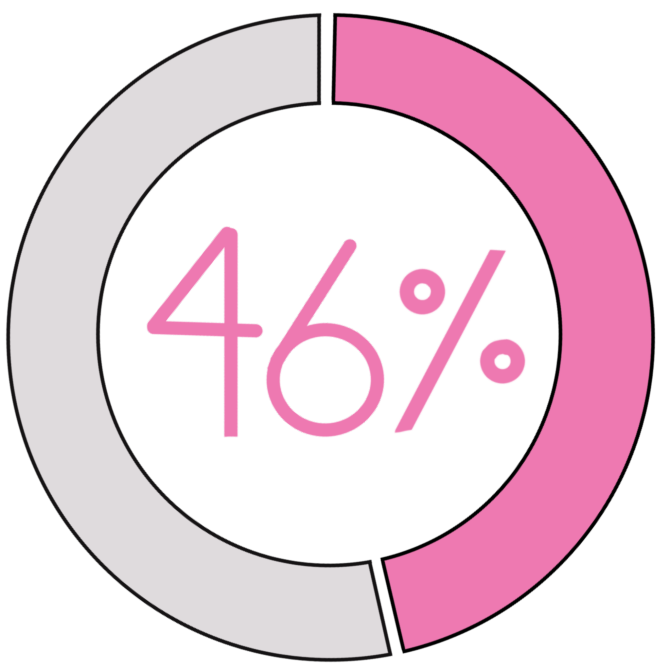

The 2014 Gamergate controversy revealed the depth of systematized online harassment against advocates, mainly women, who called for a more inclusive gaming culture. Has the player community become more inclusive since then? According to a recent female gamer survey by market research firm Bryter, abuse or online discrimination continues. Although men and women both experience abuse, female gamers are more likely to experience sexual harassment and being excluded from the game.

Almost half of all game enthusiasts are female
Although long thought to be a male-dominated activity, the number of female gamers is on the rise, now accounting for nearly half of all gamers.